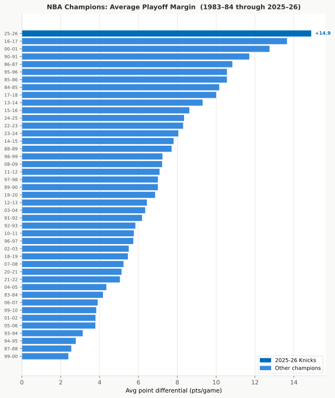
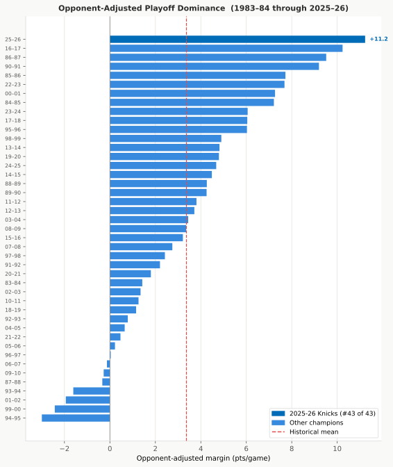
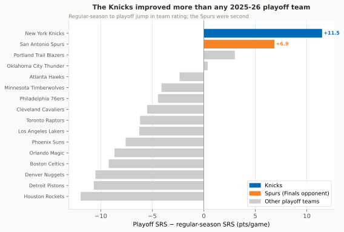
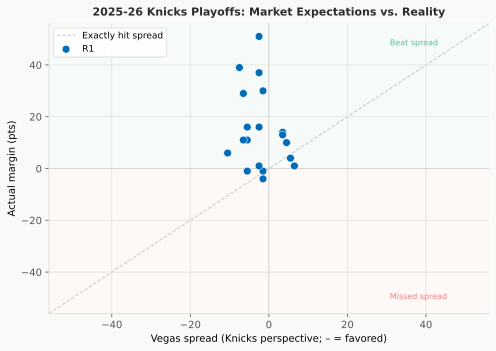
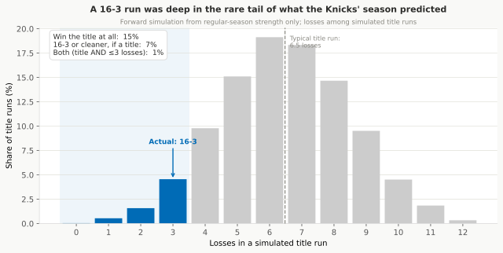
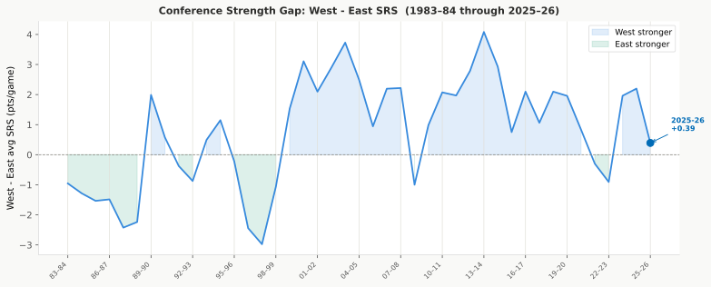
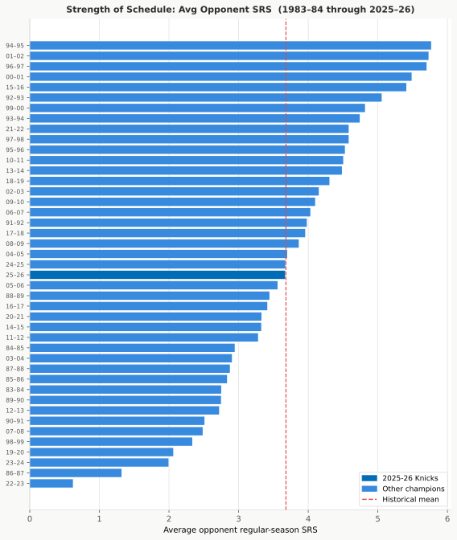
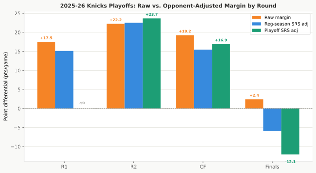
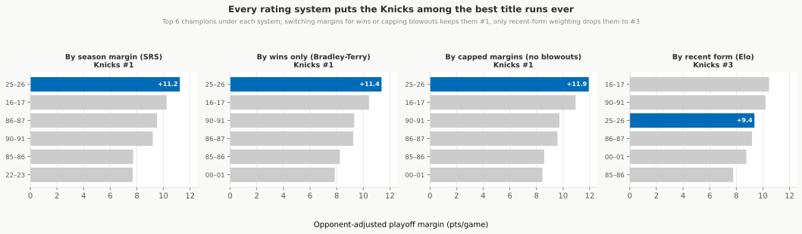
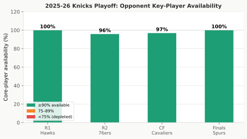

The Investigation: Why the Run Was Historic, and What Doesn’t Diminish It
Draft
Companion to Did the 2026 Knicks Have a Historic Playoff Run?. The main report tells the story in full; this document shows the tests behind it. Part 1 lays out the affirmative case that the run was historically dominant, and the evidence behind each claim. Part 2 takes the objections, the reasons people offer for why a 16-3 run might mean less than it looks, and tests each one directly. A short closing section covers the one caveat that does survive.
The numerical detail behind every test is in knicks_2026_historic_results.md; the charts here are the same ones used in the full analysis pipeline.
How to read the numbers. Two statistical terms recur below. A 95% range around a number is the interval its true value would land in 95 times out of 100 if the same short run could be re-drawn; the wider it is, the less a 19-game sample has pinned down. A p-value is the chance of a result at least this lopsided arising by luck if there were really nothing there; the smaller it is, the harder the result is to dismiss as a fluke.
Part 1: The Case That the Run Was Historic
The 2025–26 Knicks went 16-3 with a +14.9 average margin. The affirmative case that this was a historically dominant run rests on a handful of measurable claims, each ranked against the 43 NBA champions since 1983–84. Each section below states a claim, the test that checked it, what the data showed, and why the result holds up.
The Raw Run Is the Best on Record
The claim. The Knicks’ raw playoff dominance ranks at or near the top of every champion since 1983–84.
The test. Rank their 16-3 record and +14.9 average margin against all 43 champions, and put a range on the margin by re-drawing the 19 games at random thousands of times.
What the data showed. The +14.9 average margin is the highest in 43 years, the 100th percentile of the champion set. The .842 win rate sits at the 88th percentile, behind a small group led by the 2016–17 Warriors (.941). Re-drawing the 19 games leaves the average margin anywhere from +7.4 to +22.4 (a 95% range).
Why it holds. Even at the unlucky end of that range, the run would still rank above the average champion. The +14.9 is not the work of one or two blowouts that happened to land in a short sample: it is the best raw margin on record and stays elite across the re-draws.

It Survives Adjusting for Opponent Strength
The claim. The dominance is not just a soft-schedule artifact. After crediting opponents for their quality, the Knicks still rank first.
The test. Subtract each opponent’s rating (weighted by how many games the series ran) from the Knicks’ margins, then rank the adjusted figure against all 43 champions.
What the data showed. The opponent-adjusted margin was +11.2 per game, first all-time, ahead of the 2016–17 Warriors (+10.2) and the 1986–87 Lakers (+9.5).
Why it holds. The ranking does not hinge on whether margins or wins drive the rating. A wins-only system that never sees a single point margin also puts them first (Part 2, “the margins are garbage-time padding”), and the schedule they faced was a median champion’s rather than a soft one (Part 2, “the bracket was soft”), so the adjustment is not propping up a weak slate. The one rating that does move them, off the top to third, is Elo, which weights recent form and rates their late-peaking opponents tougher (Part 2, “the early-round opponents were fading”).

They Played Far Above Their Own Level
The claim. The Knicks did not coast as an already-strong regular-season team. They elevated more than their own regular season predicted and more than any other team in the 2026 field.
The test. Compare their actual playoff margins to what their regular-season rating (+6.05) predicted against those opponents, and compare every 2026 playoff team’s jump in rating from the regular season to the playoffs.
What the data showed. The Knicks outscored their own forecast by +12.5 points per game, second among all 43 champions behind only the 2000–01 Lakers. Their rating climbed from +6.05 in the regular season to +17.53 in the playoffs, a +11.48 jump: the largest of any team in the 2026 field, and the second-largest by any champion on record. The team they beat in the Finals, the Spurs, made the second-largest jump in the field (+6.85, from +8.28 to +15.13). The Finals paired the field’s two most-improved teams, which is part of why the series was tight.
Why it holds. The elevation shows up in two separate measures, the overperformance against their own forecast and the raw rating jump, both near the top of the field and the historical set. It also lines up with where the run was actually tested: the Knicks beat the field’s best-performing team, fully healthy, in a Finals decided by a +2.4 average margin, not just soft early-round opponents.

The Market Saw the Same Two-Sided Run
The claim. A benchmark set before the games, the betting market, agreed the Knicks were dominant in the East and tested in the Finals.
The test. Compare the betting spread for each game to the actual result, round by round.
What the data showed. The Knicks went 16-3 against the spread, beating it by +16.9 points a game. In the three East rounds they covered 14-0, beating the spread by 21 to 26 points a round. In the Finals the market made them slight underdogs (+2.5), and they won by an average of +2.4, almost exactly the spread.
Why it holds. Two cautions keep this from being independent proof. The 19 games are really four series and move together, so the effective sample is about 6.7; and an against-the-spread margin is mostly the same scoreline read from the bookmaker’s side, not a separate measurement of strength. Even crediting that clustering, the cover record still beats what a coin flip would produce (about a 1-in-25 chance it is a fluke, p ≈ 0.04), but the 95% range for the true cover rate runs from 47% to 97%, a coin flip to near-automatic: suggestive, not conclusive. But the split is the point: the market, pricing in everything known at the time, saw a team that overwhelmed the East and faced a near-coin-flip in the Finals, the same two-sided run the ratings describe.

The Run Beat Its Own Forecast
The claim. From where the Knicks started the playoffs, a 16-3 title was improbable, so the run measures how far they exceeded expectations rather than a predictable march.
The test. A forecaster that knows only each team’s regular-season strength and who had home court plays the four best-of-seven rounds tens of thousands of times.
What the data showed. The model made the Knicks a Finals underdog (about a 31% chance to win that series) and gave them about a 15% chance to win the title at all. A run as clean as 16-3 was rarer still: only about 7% of the model’s title runs lost three or fewer games, and about 1% of all simulated seasons produced both a title and three or fewer losses.
Why it holds. The forecast is built only from regular-season strength, so it captures what was knowable before a single playoff game. The gap between a roughly 15% title chance and the actual 16-3 title is the same overperformance measured above, told in wins and losses instead of point margins.

Part 2: The Objections That Don’t Diminish It
A 16-3 playoff run with a +14.9 average margin looks historic on its face. But a record that good invites deflation: maybe the conference was weak, the bracket was soft, the early-round opponents were fading, the scoreboard was padded, the high-scoring era inflated the margin, or the opponents were hurt. Each of these is a fair objection, and each is testable rather than something to wave off.
“The East was historically weak”
Why it seemed plausible. The Knicks came up through the Eastern Conference. The East has spent long stretches as the weaker half of the league, so a path that never touched the West until the Finals could inflate a record without inflating the team behind it.
The test. The average team rating gap between the conferences (West SRS minus East SRS) for 2025–26, ranked against every season back to 1983–84, plus the East’s regular-season record in games against the West.
The result. The gap was +0.39 points per game, the 37th percentile of West dominance. In 63% of seasons since 1984 the West led by more than it did in 2025–26. The East’s inter-conference win rate was 0.487, near even. The three most West-tilted seasons on record (2013–14 at +4.08, 2003–04 at +3.73, 2000–01 at +3.11) are several times larger than this one.

How much it explains away. Essentially none. By any league-wide measure the 2025–26 East was unremarkable, if anything slightly more balanced than the 42-year average. This objection is the weakest of the set. (Main report, §3.)
“The bracket was soft”
Why it seemed plausible. Even a normal conference can hand a champion an easy road. If the specific teams the Knicks drew were below the usual championship caliber, the margins would be padded by the matchups rather than the team.
The test. The games-weighted average rating of the Knicks’ four playoff opponents (each opponent weighted by how many games the series ran), ranked against all 43 champions since 1983–84.
The result. The opponents averaged +3.67, the 49th percentile, essentially the median champion’s schedule. Cleveland (+3.77) was the strongest East opponent the Knicks drew, and the Spurs entered the Finals as one of the strongest teams in the field (+8.28 in the regular season, second only to Oklahoma City among playoff teams).

How much it explains away. Nothing. The schedule was neither unusually easy nor unusually hard; it sat at the historical middle. (Main report, §3 and §4.)
“The early-round opponents were fading”
Why it seemed plausible. Regular-season ratings describe a team’s whole year. If the 76ers and Cavaliers were declining by the time the Knicks met them, the rounds 1–3 blowouts would overstate how good those opponents really were in May.
The test. Recompute each opponent’s playoff rating from their playoff games excluding the Knicks series, an independent read on their form, then re-adjust the Knicks’ margins against it. The Hawks played only the Knicks, so there is no independent measure of them.
The result. A weak maybe, and only for two opponents. The 76ers and Cavaliers rated about 1.2 and 1.5 points below their regular-season marks in their non-Knicks playoff games. But each of those reads rests on only a handful of games, so a gap that small is about as likely to be the random bounce of a short schedule as a real dip. The Spurs moved the opposite way: from +8.28 in the regular season to +14.48 in their non-Finals playoff games, a +6.2 rise, the largest of any Knicks opponent. Adjusting the whole run for opponents’ actual playoff form still leaves the Knicks at +9.05 per game, narrowly the best on record (effectively tied with the 1986–87 Lakers at +8.99).

How much it explains away. A little, at the edges, and only in the rounds the Knicks won most easily. The toughest opponent of the run went the other way and was playing above its season form. (Main report, §5.)
“The margins are garbage-time padding”
Why it seemed plausible. A +14.9 average margin can be inflated by running up the score in games that were already decided. Any rating built on point margins would reward that padding.
The test. Re-rank the run with a wins-only rating, which is fit from nothing but who beat whom and never sees a single point margin.
The result. On a pure wins-only basis the Knicks’ opponent-adjusted dominance still ranks first of 43, and it grades their schedule almost exactly as the margin-based rating does.

How much it explains away. None. Stripping margins out entirely does not knock them off the top, so the dominance lives in who they beat, not just by how much. (Main report, §11.)
“The high-scoring era inflated the margin”
Why it seemed plausible. 2025–26 had the most points per game in the dataset (115.6, against a 103.5 historical mean). In a higher-scoring league, the same level of dominance could produce a mechanically larger point margin.
The test. Two era adjustments pointing in different directions. A scoring-share version scales each margin by that season’s points per game (a deliberately harsh take that treats the whole scoring boom as inflation). A possessions version scales by estimated pace, which separates a fast game from an efficient one.
The result. Most of 2025–26’s scoring is better shooting, not a faster game: in possessions the season ran only about 4% above average. Per 100 possessions the Knicks’ raw margin (+14.63) and opponent-adjusted margin (+11.02) both stay first. Only the harsher scoring-share version moves them, dropping the raw margin to third.
How much it explains away. Little, on the more correct measure. On a true pace-neutral basis the #1 claim survives; the opponent adjustment also already absorbs some era effect, since a champion and its opponents are measured in the same environment. (Main report, §14.)
“An opponent was injured”
Why it seemed plausible. Dominant playoff runs often carry an injury asterisk: a key opposing star sits, and the margins balloon against a depleted team.
The test. For each opponent, the share of their rotation players (those averaging at least 15 minutes a game across the playoffs) who actually appeared in each game of the Knicks series.
The result. Average availability was 98% across the four opponents, with the Hawks and the Spurs both at 100%. The Spurs, the team that gave the Knicks their tightest series, were fully intact.

How much it explains away. None. The close Finals margin reflects genuine competition against a whole team, not a depleted one. (Main report, §9.)
What actually does temper the claim
None of the deflation objections above survives contact with the data, but one genuine caveat does, and it has nothing to do with the opponents. It is the shortness of the run itself.
The “best opponent-adjusted margin of any champion” claim rests on 19 games. That is a small sample, and the other 42 champions are measured with the same kind of uncertainty. When every champion is allowed to be as uncertain as the Knicks, and the field is judged all at once, the Knicks come out as the single best only about 9% of the time, and in the top five about a third of the time. The run is clearly among the better champions, but the data cannot crown them the outright #1 that a single rating suggests. There is a second, separate reason the #1 is not secure, and it is not about sample size: weight opponents by recent form (Elo) or grade the margin against how top-heavy today’s league is, and the Knicks read as a top-three to top-five run rather than a clear first.
The honest position is not that the run was less dominant than it looked: the deflation objections all fail. It is that 19 games is too short to settle a first-place tie against 43 years of champions. Clearly elite, plausibly the best, not provably the best. (Main report, §10, §11 and §14.)